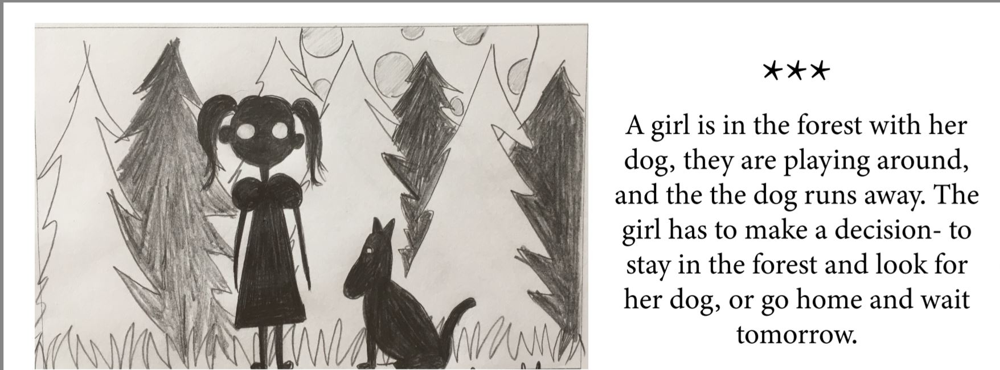

This task for me was quite difficult. Although I understood how to animate the characters using Illustrator, I was struggling with animating it on my website using css.
I liked crating my own character in Illustrator using only vector art.
Since I was a little kid, it was my passion to create character and write stories, I used so much paper in my house to pin together small books and draw comics. This was a new way how to do it. Even though it was not very easy at first, I kind of liked it and would like to learn more about animation.
I enjoyed drawing story board and writing descriptions for my story.
The main character work sheet helped me to fulfill the characters features and inspired me for the further sotrytelling.
I learned about a new style - "LIMBO". I also learned how to make a style sheet properly,as you can see in the picture on the left.
